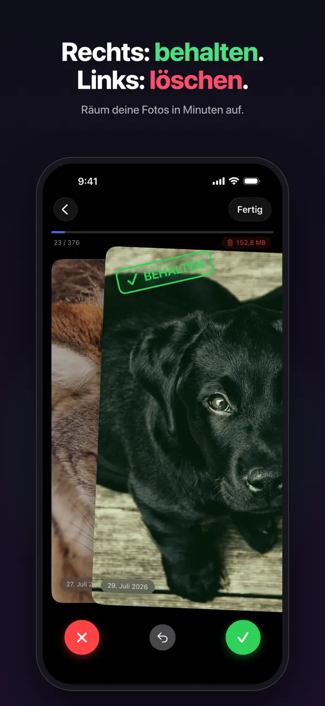
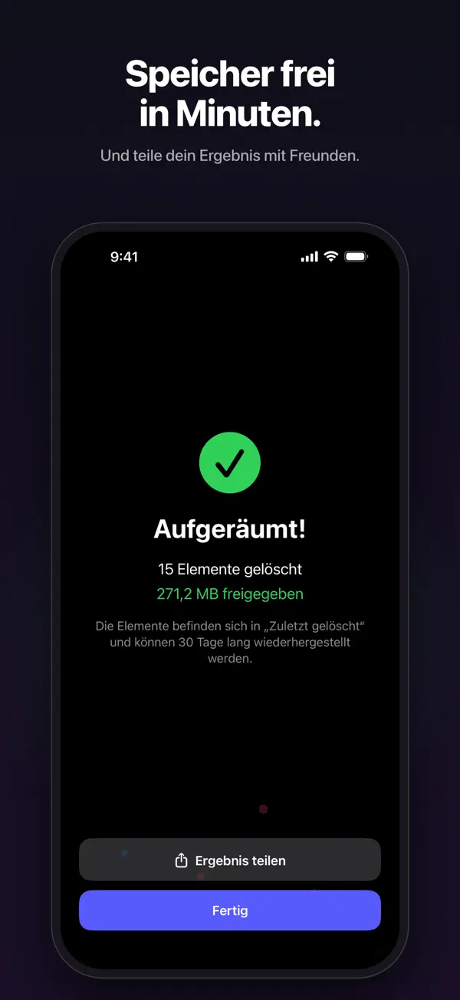

Mach dein iPhone frei.
Wische nach links zum Löschen, nach rechts zum Behalten.
Swiped räumt Fotos und Videos auf iPhone und iPad auf. Tausende Fotos in wenigen Minuten sortiert, ohne Werbung, ohne Abo und ohne Konto. Deine Fotos verlassen nie dein Telefon.
- Kostenlos
- Keine Werbung
- Kein Abo
- Kein Konto
- Nichts verlässt dein iPhone




So funktioniert's
- 1Wähle ein Album oder deine ganze Mediathek.
- 2Rechts behalten, links löschen. Jederzeit rückgängig machen.
- 3Auswahl prüfen, bestätigen und Speicher freigeben.
Alles, was du brauchst, und nicht mehr
Privat von Grund auf
Alles passiert auf deinem iPhone. Swiped sammelt keine Daten: „Keine Daten erfasst“ im App Store.
Sicher löschen
Nichts wird gelöscht, bevor du deine Auswahl geprüft hast. Gelöschte Fotos bleiben 30 Tage in „Zuletzt gelöscht“.
Große Dateien finden
Filtere nach Fotos, Videos oder Bildschirmfotos, nach Datum und Größe, um die größten Platzfresser zu finden.
Speicherzähler
Sieh live, wie viele Megabyte du gerade freigibst.
Unbegrenztes Rückgängig
Anders überlegt? Geh so viele Karten zurück, wie du willst.
Später weitermachen
Deine Sitzung wird nach jedem Wischen gespeichert. Mach morgen einfach weiter.
Fragen
Ist Swiped wirklich kostenlos?
Ja. Wischen, Prüfen und Löschen sind kostenlos, ohne Werbung, ohne Abo und ohne Konto. Optionale Extras kommen vielleicht später als Einmalkauf, nie als Abo.
Verlassen meine Fotos mein iPhone?
Nein. Swiped sieht sich deine Fotos nur auf deinem iPhone an. Es gibt keinen Server und es werden keine Daten gesammelt.
Was passiert mit gelöschten Fotos?
Nichts wird ohne deine Bestätigung gelöscht. Danach legt iOS sie in „Zuletzt gelöscht“, wo du sie 30 Tage lang wiederherstellen kannst.
Funktioniert es mit iCloud-Fotos?
Ja. Fotos in iCloud erscheinen ebenfalls, und ein in Swiped gelöschtes Foto wird überall gelöscht, wie in der Fotos-App.
Welche Geräte werden unterstützt?
iPhone und iPad ab iOS 16, in 9 Sprachen.
Gibt es eine Android-Version?
Nein. Swiped gibt es nur für iPhone und iPad. Apps mit ähnlichem Namen auf Android oder anderswo im App Store haben nichts damit zu tun.
Swiped: Fotos aufräumen
Laden im App StoreiPhone · iPad · Kostenlos